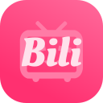

感谢您安装 BiliScape
您的 BiliScape 已就绪，点击“🧩”页的“”标志即刻启动主页
chrome/edge插件管理，打开开发者模式，加载已解压的扩展，选择所在文件夹，点击确定即可。
若要安装为网页应用：主菜单，创建快捷方式，勾选在独立窗口打开，确认即可。
建议在网页首页登陆后再使用。
在Github上获取：Download BiliScape
在Microsoft Edge Addons上获取：Download BiliScape
该项目遵循 GPL-3.0 协议开放源代码。